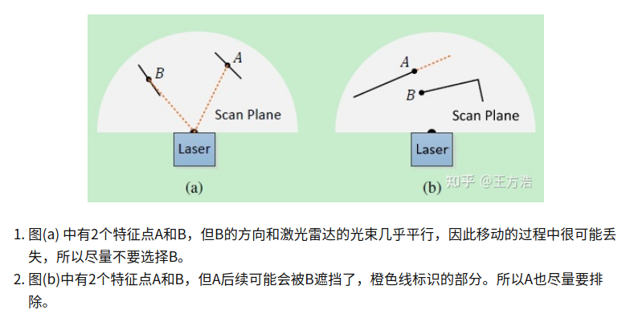
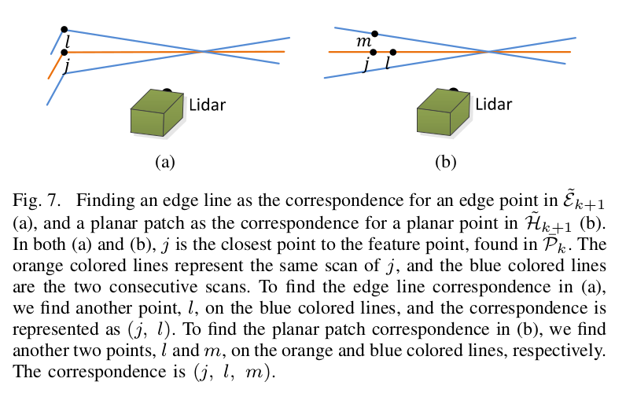

LOAM
2021-01-22
1. Lidar Odometry
激光里程计模块
1.1 Feature Point Extraction
使用特征点来代替完整的数据帧。
曲率计算公式，代码中也就是点x,y,z的值与相邻10个点值的向量和。
一个scan分为4个部分，每个部分2个角点与4个平面点。曲率值大的是角点，小的是平面点。
去除一些不稳定的点，下图(a)中的B平面的很多点就没有被检测到，(b)中的两个点换一个角度就是planar points。

1.2 Finding Feature Point Correspondence
角点与平面点存储在了一个kd-tree中。
下图中，j为距离角点i并且同一个scan上最近的点，l为上下两个scan中距离i最近的点，直线lj即为对应的边(edge)。
同理，选出j,m,l作为平面点对应的平面。后面加一个验证的操作，即(a)确保lj为角点，(b) j,m,l为平面点。
Here, we particularly require that j and l are from different scans considering that a single scan cannot contain more than one points from the same edge line.
解释： 当是一个墙角的时候，边缘都是角点，垂直的墙角的角点必然在两条scans上。而对于水平的墙角，激光不大能检测的出来。[TODO]

于是，帧与帧之间的转换，就是最小化角点i到对应直线(j,l)的距离，平面点i到对应平面(m,j,l)的距离
角点i到对应直线(j,l)的距离: 面积除以底，
平面点i到对应平面(m,j,l)的距离: 体积除以底面积
2. Lidar Mapping
激光建图模块
特征点数量为前端的10倍。
特征点选择方法跟上面不同，前端可以知道每个点属于哪一个scan，而这边都是点云。这边在一个\(10^3cm^3\)的cube里面寻找对应线与面，采用了计算特征值与特征向量的方法。得到特征点对应的边缘线与平面。
即，1个区域里面所有的角点构成了一条线，计算线的协方差矩阵，特征值分解，最大特征值对应的特征向量，就是这个直线的方向向量。
同理，1个区域里面所有的平面点构成了一个平面，计算平面的协方差矩阵，特征值分解，最小特征值对应的特征向量，就是平面的法向量。
同上，列出优化error，LM最小化。
3. 优缺点
没有回环检测